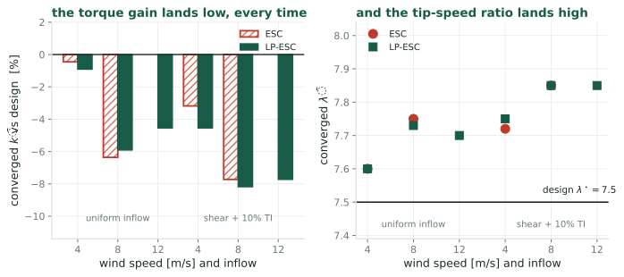
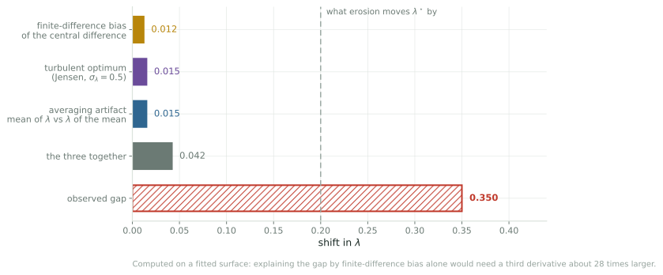

A 0.35 offset in published simulations, and why the two obvious explanations do not account for it
Robot Control Lab · Systems Engineering · UT Dallas
Below rated wind speed a turbine holds its tip-speed ratio at the value that maximizes the rotor’s power coefficient. Extremum seeking finds that value online, by dithering the torque gain and climbing.
Every convergence claim in this line of work is scored against \(\lambda^\star = 7.5\), the peak of a blade-element design curve. This deck asks whether that is the number the algorithms are actually converging to.

Every converged torque gain in the 2019 large-eddy simulations sits below the design value, and every tip-speed ratio sits above it. Two algorithms, three wind speeds, two inflow conditions, and the sign never changes.
(a) the steady peak
\(\arg\max C_P(\lambda)\) on the design curve. What every paper scores against.
(b) the turbulent peak
\(\arg\max \mathbb{E}[\ln P]\) under the actual inflow. Differs from (a) by a Jensen gap plus rotor lag.
(c) the algorithm’s fixed point
Where the estimate vanishes, which adds the finite-difference bias of the demodulator.
These are three different numbers. Before asking how well the estimator performs, we have to say which one it is estimating.
The 2019 scheme is a square-wave two-point difference, so what it returns is
\[\hat g \;=\; \frac{J(q+a)-J(q-a)}{2a} \;=\; J'(q) + \frac{a^2}{6}J'''(q) + O(a^4)\]
The algorithm stops where \(\hat g = 0\), not where \(J' = 0\), so its fixed point sits at
\[q^\star - q_{opt} \;\approx\; -\frac{a^2}{6}\,\frac{J'''}{J''}\]
Nonzero whenever the log-\(C_P\) curve is asymmetric at the peak, which it is. And \(a\) was \(0.3\) against a design gain of \(2.2\), so about 14%. Not a small perturbation.
Rotor inertia is \(3.5\times10^7\) kg m², so \(\lambda\) cannot track the wind. It swings rather than sits. Expanding the objective under that swing,
\[\mathbb{E}\big[C_P(\bar\lambda + \delta)\big] \approx C_P(\bar\lambda) + \tfrac12 \sigma_\lambda^2\,C_P''(\bar\lambda)\]
and maximizing over \(\bar\lambda\) moves the optimum to
\[\bar\lambda^\star - \lambda^\star \;\approx\; -\frac{\sigma_\lambda^2}{2}\,\frac{C_P'''}{C_P''}\]
Same structure as candidate one: a third derivative over a second, scaled by a variance. But the implications are opposite. One says the algorithm misses a fixed target; the other says the algorithm is right and the target moved.

Both fail, by more than an order of magnitude. Adding a third effect, that the reported \(\bar\lambda\) is a time average and \(\lambda(u)\) is curved, brings the total to \(0.042\) against an observed \(0.350\).
Where the gap actually lives
The torque gain lands \(7.7\%\) low, and that alone moves \(\lambda_{eq}\) by \(+0.19\). So the question is why \(k\) is low, not why \(\lambda\) is high.
The one candidate left
The simulated rotor’s own \(C_P\) peak is not at \(7.5\). Its realized \(C_P\) is already known to be \(0.44\) rather than \(0.49\).
The design curve is already established to be wrong about the level. Nobody has checked whether it is also wrong about the location, and that is the explanation the arithmetic cannot rule out.
Stop closing the loop. Hold the torque gain at a series of fixed values, run each long enough to average out the turbulence, and measure the simulator’s own \(C_P(\lambda)\) curve. Then ask where its peak is.
If the peak is at 7.5
The gap is real and none of the three candidates explain it. That is a more interesting outcome than confirming one of them.
If the peak is near 7.85
There is no estimator bias. The algorithms were right, the reference was wrong, and every convergence claim in the line needs restating against the new number.
A few days of compute, no new code, and it is the same measurement the simulator-fidelity question needs anyway.
It gates the bound
You cannot write a performance bound for the estimation of a quantity that has not been defined.
It gates stability
Calling a run unstable presumes you know what it failed to converge to.
It gates the application
Detecting a \(0.2\) shift from erosion is hopeless if the reference carries an unexplained \(0.35\).
Cheapest of the open questions, and the one the others rest on.
Two explanations, costed out, and both are dead by an order of magnitude.
The claim
The \(0.35\) offset is not estimator bias and not a Jensen shift. What remains is that the simulated rotor’s peak is somewhere other than \(7.5\).
The caveat
The third derivative behind that arithmetic comes from a fitted surface. The sensitivity is stated on the arithmetic slide: it would have to be wrong by \(28\times\).
Ciri, Leonardi & Rotea, Wind Energy 2019, Tables 3 and 4 · Kumar & Rotea, WES 2024
One of three: see also the speed limit and whether probing is needed.
← Wind Turbine Control · Q1, the Estimand